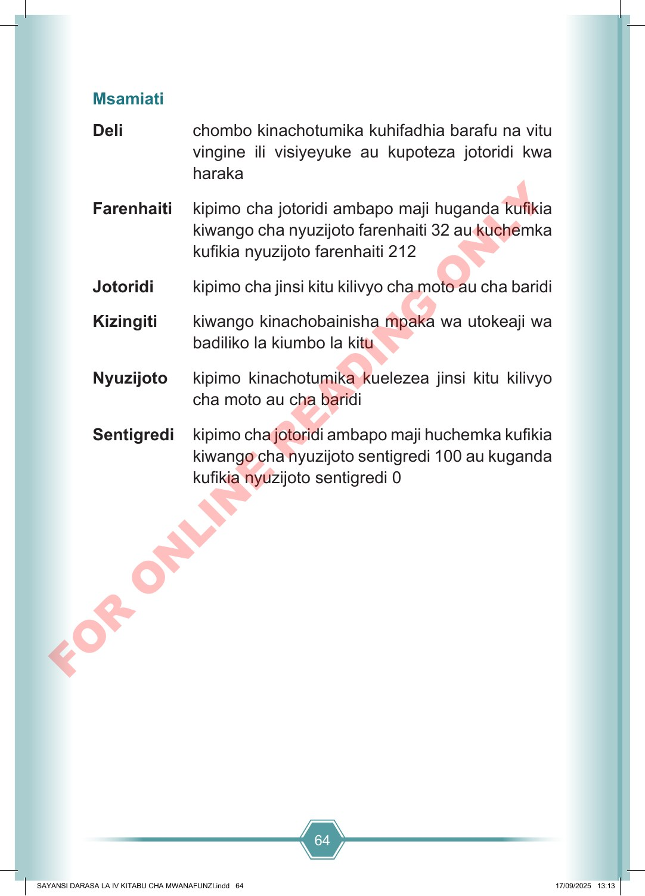

64 Msamiati Deli chombo kinachotumika kuhifadhia barafu na vitu vingine ili visiyeyuke au kupoteza jotoridi kwa haraka Farenhaiti kipimo cha jotoridi ambapo maji huganda kufikia kiwango cha nyuzijoto farenhaiti 32 au kuchemka kufikia nyuzijoto farenhaiti 212 Jotoridi kipimo cha jinsi kitu kilivyo cha moto au cha baridi Kizingiti kiwango kinachobainisha mpaka wa utokeaji wa badiliko la kiumbo la kitu Nyuzijoto kipimo kinachotumika kuelezea jinsi kitu kilivyo cha moto au cha baridi Sentigredi kipimo cha jotoridi ambapo maji huchemka kufikia kiwango cha nyuzijoto sentigredi 100 au kuganda kufikia nyuzijoto sentigredi 0 SAYANSI DARASA LA IV KITABU CHA MWANAFUNZI.indd 64 SAYANSI DARASA LA IV KITABU CHA MWANAFUNZI.indd 64 17/09/2025 13:13 17/09/2025 13:13 F O R O N L I N E R E A D I N G O N L Y